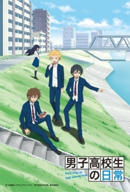
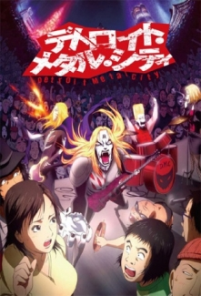

Gintama

Edo döneminin sonlarında “Amando” adlı zalim uzaylıların Dünya’yı istilası başlar ve dünyalılar ile uzaylılar arasında bir savaş kopar. Savaş sırasında birçok samuray hayatını kaybeder. Sonunda dünyalılar uzaylıların silahlarına yenik düşer ve teslim olurlar. Bu andan itibaren istediklerini yapmaya başlayan ve Edo şehrinde diledikleri gibi davranmaya başlayan Amando’lar yetmezmiş gibi hükümet geride kalan samurayların kılıç taşımasını yasaklar. Aradan uzun zaman geçer. İşte Sakata Gintoki, artık samuraylara ihtiyaç duyulmayan böyle bir dönemde yaşayan bir samuraydır. Güçlü bir uzaylı olan Kagura ve bir nevi öğrencisi olan Shinpachi ile yaşayan Gintoki, Dünya’yı daha katlanılır bir yer kılabilmek ve kiralarını ödeyebilmek için kendilerine gelen birbirinden garip görevleri üstlenirler.
Danshi Koukousei no Nichijou
Tadakuni, Hidenori ve Yoshitake çok yakın üç arkadaştır. Gittikleri lise erkek lisesi olduğundan bunun sıkıntısını yaşamakta ve bundan dolayı karşı cins ile karşı karşıya kaldıklarında çoğu zaman ne yapacaklarını bilmemektedirler.
Aggressive Retsuko
Takdir görmediği ofis işinden bunalan Kızıl Panda Retsuko, işten sonra gittiği karaokede bağıra çağıra death metal söyleyerek gündelik zorlukların üstesinden gelir.
Detroit Metal City
Detroit Metal City'de; bambaşka hayaller peşindeyken nasıl olduysa kendini death metal sanatçısı Johannes Krauser II’ye dönüşmüş olarak bulan ve aslında nazik karakterine her bakımdan zıt olan bu sert müzik hayatının içinde birbirinden komik durumlara giren Shinichi Negishi ve çevresindekilerin başlarından geçenler anlatılıyor.
Himouto! Umaru-chan
Umaru, ağabeyi Taihei ile birlikte şehirde yaşayan, 16 yaşında popüler ve güzel bir genç kızdır. Dışarıdan bakıldığında, yumuşak kalpli ve de ilgilenen bir kız kardeş gibi görünmektedir, fakat evde gerçekte nasıl biri olduğunu kim bilebilir ki? Evdeyken tek yaptığı şeyler uyumak, oyun oynamak, televizyon seyretmek, abur cubur yemek ve de kola içmektir... Bütün ev işlerini ağabeyine yaptırmaktadır. Arkadaşları eve süpriz ziyeretine gelip "gerçek Umaru'yu" görecek olursa diye kendine bir kamuflaj geliştirmiştir. Herkese kendisinin Umaru'nun küçük kız kardeşi olduğunu söylemektedir. Taihei, kız kardeşinin bu ikili tutumu arasında gidip gelsede, komik ve de sevecan küçük tatlı kız kardeşinde nefret edemez.
Barakamon

Hikayemiz; ünlü bir kaligrafi sanatçısına yumruk attığı için küçük bir adaya gönderilen ve genç bir kaligrafi sanatçısı olan Handa Seishu’nun etrafında geçiyor. Şehir dışında hiç yaşamamış olan Handa, traktörlerle yolculuk etmeye alışmaya çalışırken; birden küçük çocuklar onun evini oyun alanı olarak kullanmaya başlarlar. Bakalım Handa bu adada da olsa Kaligrafi sanatına yoğunlaşabilecek midir?